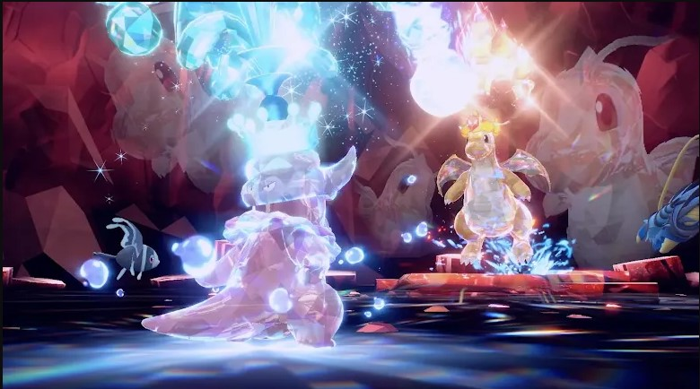
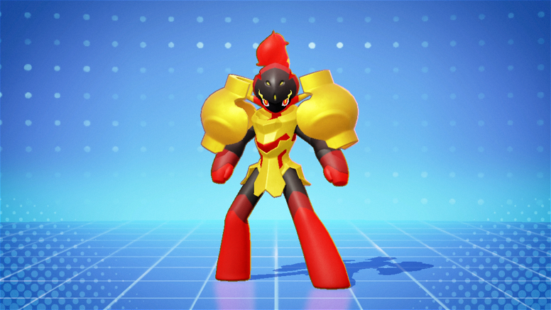
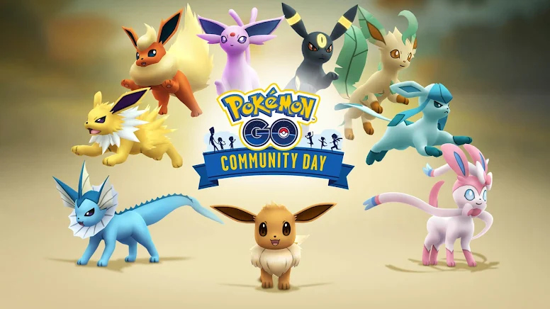
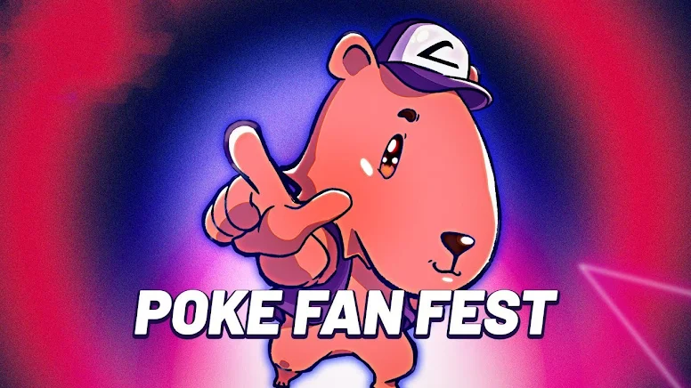

Estreado em 1997, a série de anime Pocket Monsters (ou Pokémon: A Série, no
ocidente)
atualmente conta com mais de mil episódios divididos em 23 temporadas e 7 séries principais: Pokémon,
Geração Avançada, Diamante e Pérola, Preto e Branco (Best Whishes, no Japão), XY, Sol e Lua, e Jornadas
(chamada simplesmente de Pocket Monsters, no Japão). Durante todos esses anos a história segue o garoto
de 10 anos, Ash Ketchum, e seu parceiro Pikachu na sua jornada para se tornar um Mestre Pokémon.
Data de lançamento do primeiro episódio: O primeiro episódio de Pokémon foi exibido em 1º de abril de
1997 no Japão. O episódio é intitulado "Pokémon! Eu escolho você!" ("ポケモン！きみにきめた！" em japonês).
Rede inglesa: Nos Estados Unidos, o anime começou a ser exibido na The WB Television Network (parte do
bloco de programação infantil Kids' WB) a partir de 8 de setembro de 1998.
Adaptado de: O anime Pokémon foi adaptado da série de jogos de videogame Pokémon, criada por Satoshi
Tajiri e lançada pela empresa Nintendo, desenvolvida pela Game Freak. O jogo original foi lançado para o
Game Boy em 1996 no Japão.
Rede original: A rede original que exibiu o anime no Japão foi a TV Tokyo.

As Tera Raid Battles representam uma modalidade de batalha em Pokémon Scarlet e Violet que permite enfrentar
um Pokémon especial em grupo de até quatro jogadores. Os cristais que possuem Tera Raid Battle estão
espalhados por toda a região de Paldea

Prepare-se para enfrentar o poder incandescente de Armarouge, o novo atacante de Pokémon Unite! Com sua
Habilidade Fogo Brilhante, ele reduz o dano recebido e amplifica seus ataques básicos, tornando-se uma força
resistente e ofensiva na linha de frente. Seu Movimento Unite Psykaboom lança uma poderosa bola de fogo que
atordoa e afasta os inimigos, controlando o campo com precisão cirúrgica.

Eevee é um Pokémon do tipo Normal muito especial: ele possui o maior número de evoluções diferentes. Até o
momento, foram descobertas oito evoluções para este Pokémon

A segunda edição da Poké Fan Fest acontecerá nos dias 05 e 06 de outubro, na Aldeia CoWorking, dentro do
Shopping Estação, em Curitiba/PR. O evento é feito especialmente de fã para fã de Pokémon, e busca trazer a
experiência de feiras e convenções da área geek, nerd, gamer e tecnológica, para a cidade de Curitiba,
voltado exclusivamente para o universo de Pokémon.